10. Oracle Express 11g Release 2
Ahora veremos cómo trasladar lo que se hizo con MySQL 5 a Oracle Express 11g Release 2.
 |
10.1. Configuración del entorno de desarrollo
10.1.1. Entorno Eclipse
Trabajaremos con el siguiente entorno Eclipse:
 |
Los proyectos de Oracle mencionados anteriormente se encuentran en la carpeta [<examples>/spring-database-config\oracle\eclipse].
Nota: Pulsa [Alt-F5] para regenerar todos los proyectos Maven.
Inicie Oracle Express y su cliente [OraManager] (véase la sección 23.6). Generaremos:
- la base de datos [dbproduits] utilizando el proyecto [generic-create-dbproduits];
- la base de datos [dbproduitscategories] con el proyecto [generic-create-dbproduitscategories];
10.1.2. Creación de usuarios
Ahora todo se realiza en [OraManager]. El SGBD Oracle debe estar en ejecución. Utilizamos las credenciales system / system para el administrador del sistema (esto debe haberse configurado previamente). Crearemos dos usuarios:
- [DBPRODUITS / dbproduits], que será el propietario de la base de datos [dbproduits];
- [DBPRODUCTSCATEGORIES / dbproducts-categories], que será el propietario de la base de datos [dbproducts-categories];
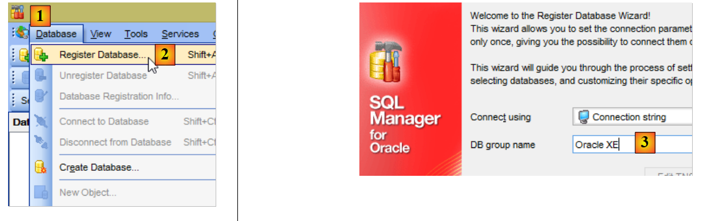 |
 |
- en [6-7], las credenciales son [system / system];
 |
 |
- en [14]: introduce dbproduits;
- en [16], el usuario ha sido creado, pero no tiene permisos suficientes para iniciar sesión. Se le concederán mediante un script SQL [17-18];
 |
- en [19], introduzca el nombre de usuario en mayúsculas;
Hacemos lo mismo para crear el usuario [DBPRODUITSCATEGORIES / dbproduitscategories]:
 |  |
 |
10.1.3. Instalación del controlador JDBC de Oracle en el repositorio de Maven
El controlador JDBC de Oracle no está disponible en los repositorios centrales de Maven. Debe descargarse desde Oracle [http://www.oracle.com/technetwork/apps-tech/jdbc-112010-090769.html]:
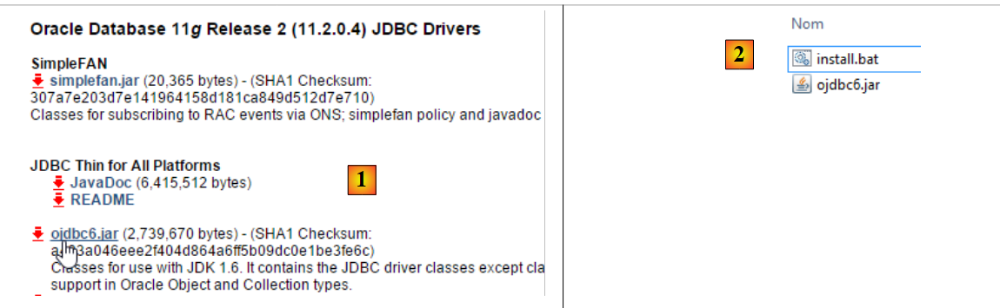 |
Una vez descargado, debe instalarse en el repositorio local de Maven. Esto se hace utilizando el siguiente script de DOS [install.bat] [2]:
"%M2_HOME%\bin\mvn.bat" install:install-file -Dfile=ojdbc6.jar -Dpackaging=jar -DgroupId=com.oracle.jdbc -DartifactId=ojdbc6 -Dversion=1.0
donde [%M2_HOME%] debe sustituirse por la ruta al directorio de instalación de Maven (véase la sección 23.2). Una vez hecho esto, el controlador JDBC puede importarse a los proyectos de Maven utilizando la siguiente configuración:
<dependency>
<groupId>com.oracle.jdbc</groupId>
<artifactId>ojdbc6</artifactId>
<version>1.0</version>
</dependency>
10.1.4. Creación de la base de datos [dbproduits]
Ahora que tenemos un usuario [DBPRODUITS / dbproduits], nos conectaremos a Oracle utilizando estas credenciales:
 |
 |
- en [6], introduce dbproduits;
- en [9], la base de datos [DBPRODUITS] que vamos a utilizar;
En la clase [ConfigJdbc] del proyecto [oracle-config-jdbc], los parámetros de conexión utilizados son los siguientes:
public final static String DRIVER_CLASSNAME = "oracle.jdbc.OracleDriver";
public final static String URL_DBPRODUITS = "jdbc:oracle:thin:@localhost:1521:xe";
public final static String USER_DBPRODUITS = "DBPRODUITS";
public final static String PASSWD_DBPRODUITS = "dbproduits";
public final static String URL_DBPRODUITSCATEGORIES = "jdbc:oracle:thin:@localhost:1521:xe";
public final static String USER_DBPRODUITSCATEGORIES = "DBPRODUITSCATEGORIES";
public final static String PASSWD_DBPRODUITSCATEGORIES = "dbproduitscategories";
Debes adaptarlas a tu configuración de Oracle.
En el proyecto [oracle-config-jpa-eclipselink], la entidad JPA se define de la siguiente manera:
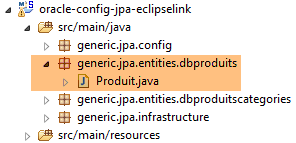 |
package generic.jpa.entities.dbproduits;
import generic.jdbc.config.ConfigJdbc;
import javax.persistence.Column;
import javax.persistence.Entity;
import javax.persistence.GeneratedValue;
import javax.persistence.Id;
import javax.persistence.SequenceGenerator;
import javax.persistence.Table;
@Entity(name="Produit1")
@Table(name = ConfigJdbc.TAB_PRODUITS)
public class Produit {
// fields
@Id
@GeneratedValue(strategy=GenerationType.SEQUENCE,generator="genSeqProduits")
@SequenceGenerator(name="genSeqProduits",sequenceName="PRODUITS_SEQUENCE", allocationSize=5)
@Column(name = ConfigJdbc.TAB_PRODUITS_ID)
private Long id;
@Column(name = ConfigJdbc.TAB_PRODUITS_NOM, unique = true, length = 30, nullable = false)
private String nom;
@Column(name = ConfigJdbc.TAB_PRODUITS_CATEGORIE, nullable = false)
private int categorie;
@Column(name = ConfigJdbc.TAB_PRODUITS_PRIX, nullable = false)
private double prix;
@Column(name = ConfigJdbc.TAB_PRODUITS_DESCRIPTION, length = 100, nullable = false)
private String description;
...
}
- líneas 18-19: la estrategia para generar la clave principal de la tabla [PRODUITS] es [strategy=GenerationType.SEQUENCE]. Para MySQL, utilizamos la estrategia [ ] [@GeneratedValue(strategy = GenerationType.IDENTITY)]. Con Oracle Express 11g, esta estrategia no se puede utilizar;
- línea 18: especificamos que la clave primaria se generará utilizando un generador de números, a menudo denominado secuencia;
- línea 19: el generador de secuencias (el atributo name hace referencia al generador de la línea 18) creará una secuencia denominada [PRODUITS_SEQUENCE] en la base de datos [dbproduits]. Dado que queremos portabilidad entre implementaciones de JPA, es importante nombrar la secuencia. De lo contrario, sin la línea 19, las tres implementaciones de JPA crearán secuencias con nombres diferentes, lo que imposibilitará que JPA2 utilice una base de datos creada por JPA1;
Ya estamos listos para ejecutar la configuración [generic-create-dbproduits-eclipselink]:
 |  |
Al ejecutar esta configuración se crean dos objetos:
- una tabla [PRODUCTS];
- una secuencia denominada [PRODUITS_SEQUENCE]
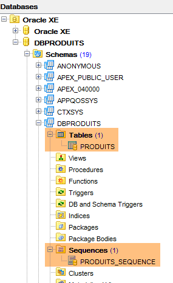 |  |
El DDL de la tabla [PRODUCTS] es el siguiente:
 |
La clave principal [ID] no se autoincrementa como ocurría con MySQL. Sin embargo, el proyecto [spring-jdbc-03] asume que el SGBD se encarga de generar las claves principales para la tabla [PRODUCTS]. Crearemos un disparador. Un disparador es un procedimiento almacenado dentro del SGBD que se ejecuta bajo ciertas condiciones. Crearemos un disparador que, con cada nueva inserción, genere la clave primaria del producto insertado basándose en la secuencia [PRODUCTS_SEQUENCE] creada por la configuración de JPA.
 |
- En [6], el disparador [PRODUCTS_ID_TRIGGER] [4] se ejecutará antes de cada inserción;
- en [7], un procedimiento almacenado específico del SGBD Oracle. Especifica que el campo [ID] de la fila que se va a insertar debe inicializarse con el siguiente valor del generador denominado [PRODUITS_SEQUENCE];
 |
La base de datos [dbproduits] ya está lista. Ejecute las siguientes configuraciones:
- [spring-jdbc-generic-01.IntroJdbc01];
- [spring-jdbc-generic-01.IntroJdbc02];
- [spring-jdbc-generic-03.JUnitTestDao1];
- [spring-jdbc-generic-03.JUnitTestDao2];
Todas deben completarse con éxito.
10.1.5. Generación de la base de datos [dbproduitscategories]
 |
Ahora ejecutaremos el proyecto [generic-create-dbproduitscategories], que generará la base de datos [dbproduitscategories]. Antes de hacerlo, en [OraManager], nos conectamos utilizando las credenciales [DBPRODUITSCATEGORIES / dbproduitscategories] para poder observar los cambios realizados en la base de datos [dbproduitscategories]:
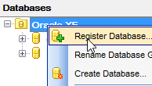 |  |  |
 |  |
 |
Las entidades JPA utilizadas tienen las siguientes estrategias de generación de claves primarias:
[Categoría]
public class Categorie implements AbstractCoreEntity {
@Id
@GeneratedValue(strategy=GenerationType.SEQUENCE,generator="genSeqCategories")
@SequenceGenerator(name="genSeqCategories",sequenceName="CATEGORIES_SEQUENCE", allocationSize=5)
@Column(name = ConfigJdbc.TAB_JPA_ID)
protected Long id;
[Producto]
public class Produit implements AbstractCoreEntity {
// properties
@Id
@GeneratedValue(strategy=GenerationType.SEQUENCE,generator="genSeqProduits2")
@SequenceGenerator(name="genSeqProduits2",sequenceName="PRODUITS_SEQUENCE", allocationSize=5)
@Column(name = ConfigJdbc.TAB_JPA_ID)
protected Long id;
[Role]
public class Role implements AbstractCoreEntity {
// properties
@Id
@GeneratedValue(strategy=GenerationType.SEQUENCE,generator="genSeqRoles")
@SequenceGenerator(name="genSeqRoles",sequenceName="ROLES_SEQUENCE", allocationSize=5)
@Column(name = ConfigJdbc.TAB_JPA_ID)
protected Long id;
[Usuario]
public class User implements AbstractCoreEntity {
// properties
@Id
@GeneratedValue(strategy=GenerationType.SEQUENCE,generator="genSeqUsers")
@SequenceGenerator(name="genSeqUsers",sequenceName="USERS_SEQUENCE", allocationSize=5)
@Column(name = ConfigJdbc.TAB_JPA_ID)
protected Long id;
[UserRole]
public class UserRole implements AbstractCoreEntity {
// properties
@Id
@GeneratedValue(strategy=GenerationType.SEQUENCE,generator="genSeqUsersRoles")
@SequenceGenerator(name="genSeqUsersRoles",sequenceName="USERS_ROLES_SEQUENCE", allocationSize=5)
@Column(name = ConfigJdbc.TAB_JPA_ID)
protected Long id;
Al igual que se hizo para la base de datos [dbproduits], se generarán cinco secuencias. Las implementaciones de JPA las utilizan para generar claves primarias. Las implementaciones de JPA no utilizan disparadores como hicimos anteriormente, sino que consultan las secuencias para obtener la siguiente clave primaria. También generaremos las claves primarias utilizando disparadores. Estos son necesarios para el proyecto [spring-jdbc-04].
Ejecutamos la configuración [generic-create-dbproduitscategories-eclipselink]:
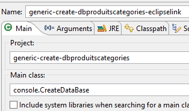 |  |
y obtenemos el siguiente resultado:
 |
A continuación, creamos cinco desencadenadores para generar las claves primarias de las cinco tablas:
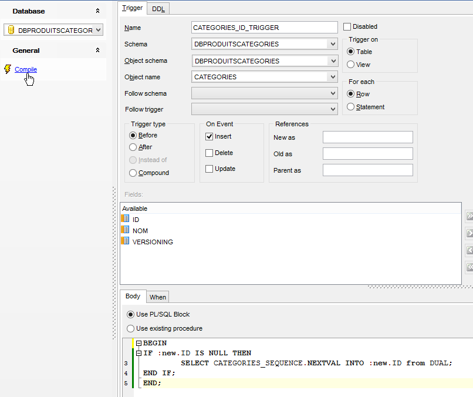 |
Los desencadenadores están asociados a las tablas de la siguiente manera:
CATEGORÍAS | CATEGORÍAS_ID_DESENCADENADOR | SECUENCIA_DE_CATEGORÍAS |
PRODUCTOS | PRODUCTOS_ID_TRIGGER | SECUENCIA_DE_PRODUCTOS |
ROLES | ID_DE_FUNCIONES_DESENCADENANTE | SECUENCIA_DE_FUNCIONES |
USUARIOS | USUARIOS_ID_TRIGGER | SECUENCIA_USUARIOS |
USERS_ROLES | USUARIOS_ROLES_ID_TRIGGER | SECUENCIA_DE_ROLES_DE_USUARIOS |
 |
El proyecto [spring-jdbc-04] requiere que la columna [VERSIONING] tenga un valor por defecto en cada una de las tablas:
 |  |
Hacemos esto en las cinco tablas.
Ahora, ejecuta las configuraciones:
- [spring-jdbc-generic-04.JUnitTestDao];
- [spring-jpa-generic-JUnitTestDao-hibernate-eclipselink];
Ambas deberían pasar.
10.2. Configuración de la capa JDBC
 |  |
El proyecto [oracle-config-jdbc] configura la capa [JDBC] de la siguiente arquitectura de prueba:
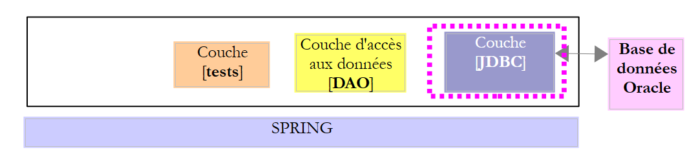 |
El proyecto es análogo al proyecto de configuración [mysql-config-jdbc] para la capa JDBC del SGBD MySQL (véase la sección 3.3). A continuación se muestran únicamente los cambios:
El archivo [pom.xml] importa el controlador JDBC de Oracle:
<project xmlns="http://maven.apache.org/POM/4.0.0" xmlns:xsi="http://www.w3.org/2001/XMLSchema-instance"
xsi:schemaLocation="http://maven.apache.org/POM/4.0.0 http://maven.apache.org/xsd/maven-4.0.0.xsd">
<modelVersion>4.0.0</modelVersion>
<groupId>dvp.spring.database</groupId>
<artifactId>generic-config-jdbc</artifactId>
<version>0.0.1-SNAPSHOT</version>
<name>configuration generic jdbc</name>
<parent>
<groupId>org.springframework.boot</groupId>
<artifactId>spring-boot-starter-parent</artifactId>
<version>1.2.3.RELEASE</version>
</parent>
<dependencies>
<!-- dépendances variables ********************************************** -->
<!-- driver JDBC from SGBD -->
<dependency>
<groupId>com.oracle.jdbc</groupId>
<artifactId>ojdbc6</artifactId>
<version>1.0</version>
</dependency>
<!-- dépendances constantes ********************************************** -->
....
</dependencies>
...
</project>
- líneas 18-22: el controlador JDBC de Oracle sustituye al controlador de MySQL;
El segundo cambio se encuentra en la clase [ConfigJdbc], que define las credenciales de la base de datos:
// paramètres de connexion
public final static String DRIVER_CLASSNAME = "oracle.jdbc.OracleDriver";
public final static String URL_DBPRODUITS = "jdbc:oracle:thin:@localhost:1521:xe";
public final static String USER_DBPRODUITS = "DBPRODUITS";
public final static String PASSWD_DBPRODUITS = "dbproduits";
public final static String URL_DBPRODUITSCATEGORIES = "jdbc:oracle:thin:@localhost:1521:xe";
public final static String USER_DBPRODUITSCATEGORIES = "DBPRODUITSCATEGORIES";
public final static String PASSWD_DBPRODUITSCATEGORIES = "dbproduitscategories";
El tercer cambio se refiere al número máximo de parámetros que puede admitir un :
// max number of parameters of a [PreparedStatement]
public final static int MAX_PREPAREDSTATEMENT_PARAMETERS = 1000;
La prueba [JUnitTestPushTheLimits] genera sentencias SQL para 5000 productos, lo que generará objetos [PreparedStatement] con 5000 parámetros. MySQL admitía este valor, pero Oracle no. Redujimos este valor a 1000 y ahora funciona.
10.3. Configuración de la capa JPA de EclipseLink
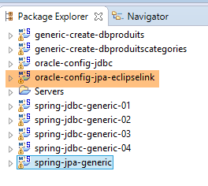 | 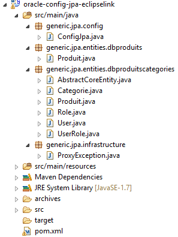 |
Nota: Pulsa [Alt-F5] para regenerar todos los proyectos de Maven.
El proyecto [oracle-config-jpa-eclipseLink] configura la capa [JPA] de la arquitectura de prueba:
 |
El proyecto es similar al proyecto de configuración [mysql-config-jpa-eclipselink] (véase la sección 7.3) para la capa JPA de EclipseLink del SGBD MySQL. A continuación se presentan únicamente los cambios:
El primero se encuentra en la clase [ConfigJpa], en la definición del bean [jpaVendorAdapter]:
// the provider JPA
@Bean
public JpaVendorAdapter jpaVendorAdapter() {
// Note: JPA entities and Eclipselink configuration are in the META-INF/persistence.xml file
EclipseLinkJpaVendorAdapter eclipseLinkJpaVendorAdapter = new EclipseLinkJpaVendorAdapter();
eclipseLinkJpaVendorAdapter.setShowSql(false);
eclipseLinkJpaVendorAdapter.setDatabase(Database.ORACLE);
eclipseLinkJpaVendorAdapter.setGenerateDdl(true);
return eclipseLinkJpaVendorAdapter;
}
- Línea 7: Le indicamos a la implementación de JPA que va a trabajar con una base de datos Oracle. La implementación de JPA adoptará entonces los tipos de datos y el SQL propios de Oracle.
El segundo cambio se refiere a la estrategia de generación de claves primarias. La nueva estrategia se presentó en la sección 10.1.
10.4. Configuración de la capa JPA de Hibernate
 |  |
Nota: Pulsa [Alt-F5] para regenerar todos los proyectos de Maven.
El proyecto [oracle-config-jpa-hibernate] es análogo al proyecto [mysql-config-jpa-hibernate] (Sección 6.3) y presenta las mismas modificaciones que guiaron la adaptación del proyecto [mysql-config-jpa-eclipselink] al proyecto [oracle-config-jpa-eclipselink] (Sección 10.3).
Con estas modificaciones, la ejecución de la configuración [spring-jpa-generic-JUnitTestDao-hibernate-eclipselink] debería completarse con éxito.
10.5. Configuración de la capa JPA de OpenJpa
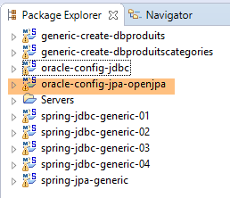 |  |
Nota: Pulsa [Alt-F5] para regenerar todos los proyectos de Maven.
El proyecto [oracle-config-jpa-openjpa] es similar al proyecto [mysql-config-jpa-openjpa] (sección 8.3) y presenta las mismas modificaciones que se utilizaron para portar el proyecto [mysql-config-jpa-eclipselink] al proyecto [oracle-config-jpa-eclipselink] (sección 10.3).
Con estas modificaciones, la ejecución de la configuración [spring-jpa-generic-JUnitTestDao-openjpa] debería completarse con éxito.
 |  |